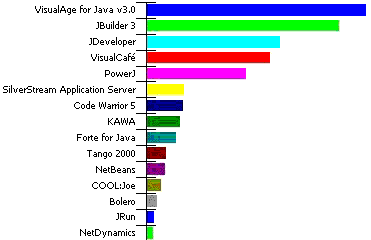

• exam_preparation
• tutorials
• tools
• regexp
• printf formats
• books
• java haters
• misc
• server side java
• threads • strings
• awt components • events
• collections • Input/Output
| LevSelector.com |
| On this page: | See also: | |||
| • main_sites
• exam_preparation • tutorials • tools • regexp |
•
jython
• printf formats • books • java haters • misc |
• applets
• server side java • threads • strings • awt components • events • collections • Input/Output |
| Java Evolution | home - top of the page - |
| > |  |
> |  |
Java started in 1995 with a lot of publicity - and is going strong
ever since. It is used for platform-independent applications (both
front-end and server-side).
• some photos |
||
| Ritchie ( C ) | Stroustrup (C++) | Gosling (Java) |
| Main Sites | home - top of the page - |
• java.sun.com
= www.javasoft.com Java (on
Sun site)
• developer.java.sun.com
- for developers, password-protected, free registration :)
• http://www.sun.com/software/shop/
- sun download center
• java.sun.com/docs/
-
• java.sun.com/docs/books/tutorial/
- tutorial
• www.deja.com/group/comp.lang.java.programmer
- comp.lang.java.programmer Usenet group discussions
• more discussions on related comp.lang.java.*
groups - www.deja.com/bg.xp?level=comp.lang.java)
• www.afu.com/javafaq.htm
- FAQ for comp.lang.java.programmer
• http://java.sun.com/products/
- Sun Java Products
• http://java.sun.com/products/jdk/1.2/
- download Java SDK (20 MB) + documentation (20 MB)
• http://java.sun.com/j2se/1.3/
- latest Java SE (Standard Edition)
• http://java.sun.com/j2se/1.3/
- J2SE (Java 2 Standard Edition)
• http://java.sun.com/j2ee/
- J2EE (Java 2 Enterprise Edition)
• http://java.sun.com/products/servlet/
- servlets
• http://java.sun.com/products/jdbc/
- JDBC
• metalab.unc.edu/javafaq/
- Prof. Elliotte Rusty Harold's Java site
• www.bruceeckel.com/javabook.html
- Thinking in Java - free online book
• www.gamelan.com/
- a lot of java stuff (with code examples)
• javaboutique.internet.com
- many Java applets
• www.JavaWorld.com
-
• www.Servlets.com
-
• http://onjava.com/
-
| Java Exam preparation | home - top
of the page - |
• http://suned.sun.com/USA/certification/javamain.html
- how to become a certified Java programmer, developer, enterprise architect.
800-422-8020
• http://suned.sun.com/USA/certification/globalcontacts.html#united
states - contacts for certification
• exams in NY
City and in Moscow
Here is all you need for exam:
| Java 2 (Exam Cram) by Bill Brogden, William
B. Brogden - the best book to prepare for the exam
• http://www.jchq.net
- very good site with the tutorial
|
• http://www.javaranch.com/
- very good site
==== http://www.javaranch.com/game.html
- herd all the cows into the pen by answering the questions
• http://www.javaranch.com/mock.html
- many links: Java exam preparation
• http://joppa.appliedreasoning.com/JavaCertification.html
- test
More:
• www.javaprepare.com
- very good site
==== http://www.javaprepare.com/quests/test.html
- exam test (local copy)
==== http://www.jaworski.com/java/certification/
- Java 2 Certification Exam Preparation
• http://www.michael-thomas.com/java/javahotsites.htm
- many links to some hot Java sites
• http://www.javaprepare.com/notes/intro.html
- good introduciton into topics of the exam
• http://www.software.u-net.com/javatutorial/javacertintro.htm
- good introduction into topics of the exam
==== http://members.theglobe.com/apoddar/questions.html
- exam - 42 questioins/answers (local
copy)
==== http://www.lanw.com/books/examcram/java.htm
- exam simulation (for different screens)
==== http://jquest.webjump.com/
- exam simulation
==== http://eddiemcnally.hypermart.net/
- download exam with 200 questions
• www.software.ibm.com/ad/certify
- Java: IBM's VisualAge & WebSphere
==== http://certify.torolab.ibm.com/ - IBM certification exam tool
• www.brainbench.com
- You may want to get this certification before you try for SUN's.
| Java Tutorials | home - top of the page - |
•
www.taxpolicy.com/tutorial/jvtutor.htm
- list of Java tutorials
• java.sun.com/docs/books/tutorial
• developer.java.sun.com/developer/onlineTraining/
• java.sun.com/books/Series/Tutorial/
• metalab.unc.edu/javafaq/javatutorial.html
• users.neca.com/vmis/java.html(also
vijaymukhi.com/vmis/java.html)
• home.att.net/~baldwin.r.g/scoop/index.htm
• www.execpc.com/~gopalan/java/java_tutorial.html
-
• www.sofcom.com.au/java/
- understanding Java
• www.intergate.bc.ca/personal/iago/javatut/
- Java Game Tutorial
• java.wiwi.uni-frankfurt.de/
- Java repository
• www.csci.csusb.edu//dick/samples/java.html
- short refcard
• www.visualpro.8m.com/myfav3.htm
- hundreds of Java links with ratings
• www.altavista.co.uk/opendir/Top/Computers/Programming/Languages/Java/Resource_Sites.shtml
• www.aureaprogram.it/JavaLink.html
- many links
• www.developer.com/directories/pages/dir.java.html
- a lot of Java stuff
• java.blackdown.org/
- Java Linux (subscribe - java.blackdown.org/java-linux/mailinglist.html
)
• java_tut_rus
- tutorial in Russian, includes list of Russian literature
( the original was downloaded from document.newmail.ru/
)
| Tools | home - top of the page - |
IDE (Integrated Development Environment):
• www.borland.com/jbuilder
- Borland JBuilder
• www.tek-tools.com/kawa/
- KAWA - very good light and convenient
• http://www-4.ibm.com/software/ad/vajava/
- VisualAge from IBM
• www.symantec.com/domain/cafe/vc4java.html
- Symantec Visual Cafe
• www.netbeans.com
- from Sun
• www.sun.com/workshop/java
- Sun Java WorkShop
• msdn.microsoft.com/visualj/default.asp
- Microsoft Visual J++
|  | Here is a diagram of popularity of top 15 IDE
packages from
• www.sys-con.com/java/index2.html). • www.ddj.com/articles/1999/9950/9950i/9950i.htm - article showing that JBuilder is most effective tool. "The participants were given twelve applets to code: a timer bean, an HTML browser, a configurable chess board, a program which would generate nonrepeating numbers, dynamic method calls, a Jframe ("sun and moon"), a chart application, a class browser, a numeric display program, a class loader, a database application, and a bouncing ball ("palm for dummies"). The teams chose a variety of strategies. The two programmers for Inprise operated independently of each other, while the IBM team chose to work together in tandem. Symantec went for big points by working on the more difficult applets first, but Inprise and IBM opted for quantity. In the end, Inprise was victorious, with a total of 12,200 points. IBM followed with 7,000 points and Symantec finished with 5,900 points." |
| Regular Expressions | home - top of the page - |
• http://jakarta.apache.org/oro/index.html
( www.savarese.org/oro/ ) -
Java Regular Expressions & NetComponents (ftp, nntp, smtp, pop3, telnet,
finger, whois, etc.), open source
• http://jakarta.apache.org/regexp
- regular expressions on apache project
• www.cacas.org/java/gnu/regexp/
- gnu regexp
• javaregex.com
- Package pat is a pure java mechanism for compiling and matching
regular expressions in java. Developed and improved over several years
(since 1996). Supports all the pattern matching capabilities of Perl
5. Package pat can match on a String, an array of characters, or even a
RandomAccessFile. Support for unicode. Has tutorial
and documentation. This package was used to construct a Java Beautifier
for use in Borland's JBuilder. It will format and properly indent source
files. Low cost - from $15 (min) to $75 (with source).
| jython | home - top of the page - |
- www.jython.org - (see www.jython.org/docs/whatis.html ) - Jyphon is basically a Python interpreter written in Java. You can import its jar file into your java application - and suddenly you can interractively execute your java methods and see the results, create custom scripts (in Python syntax - but accessing Java objects), etc. This makes java desingning fun. : ) I highly recommend you to try jyphon.
- www.python.org/doc/current/tut/tut.html - (download here: www.python.org/doc/current/download.html ) - Python tutorial. Excellent. Structured around examples with short explanations. You can pick up Python in just couple hours! I don't remember learning a new language that quick.
See more on my python page.
| printf | home - top of the page - |
Java does not have any built in equivalent to C's printf/sprintf/fprintf
family of functions.
But the
work is underway to include it.
Read how to use class PrintFormat:
• http://developer.java.sun.com/developer/technicalArticles/Programming/sprintf/
And download the source:
• http://developer.java.sun.com/developer/technicalArticles/Programming/sprintf/PrintfFormat.java
You can try to use the java.text.NumberFormat and java.text.DecimalFormat
classes, though these can't handle exponential notation and the result
is not pretty:
DecimalFormat df = (DecimalFormat)NumberFormat.getNumberInstance();
df.setDecimalSeparatorAlwaysShown(true);
df.setMaximumFractionDigits(your number);
System.out.println(df.format(1224.3353));
For String formatting you can do something like this:
StringBuffer sb = new StringBuffer("lala");
while( sb.length() <= 20 ) sb.append(" ");
Here are some better solutions:
• www.braju.com/
- fprintf(), printf() and sprintf() for Java by Henrik Bengtsson (1997-2001)
• http://www.ibiblio.org/javafaq/formatter/
- by Elliotte Rusty Harold (1997)
See also Core Java" by Gary Cornell and Cay Horstmann.
| Books | home - top of the page - |
• metalab.unc.edu/javafaq/.
- excellent site by Prof. Elliotte Rusty Harold
• www.bruceeckel.com/javabook.html
- Thinking in Java - free book on the Internet:
• ftp://ftp.oreilly.com/examples/java/
- download examples to all java O'Reilly books
10 MUST HAVE BOOKS:
| • Just JAVA 2 (4th
Edition) by Peter van der Linden - the best book to start
• Java 2 (Exam Cram) by Bill Brogden, William B. Brogden - the best and only book to prepare for the exam 4 Nutshell books by (or with) David Flanagan: • Java in a Nutshell : A Desktop Quick Reference • Java Enterprise in a Nutshell : A Desktop Quick Reference • Java Examples in a Nutshell : A Tutorial Companion to Java in a Nutshell • Java Foundation Classes in a Nutshell : A Desktop Quick Reference • Database Programming with JDBC and Java by George Reese - award-winning book • Java Servlet Programming (O'Reilly Java) by Jason Hunter (with William Crawford) • Professional Java Server Programming: with Servlets, JavaServer Pages (JSP), XML, Enterprise JavaBeans (EJB), JNDI, CORBA, Jini and Javaspaces • Practical Java Programming Language Guide: The Addison-Wesley Professional Computing Series, by Peter Haggar |
MORE GOOD BOOKS:
| • The Complete Java
2 Certification Study Guide by Simon Roberts, Philip Heller, Michael Ernest.
- good book for exam
• The Java(tm) Class Libraries, Second Edition, Volume 1: java.io, java.lang, java.math, java.net, java.text, java.util. By: Patrick Chan, et al ( download code examples: http://java.sun.com/docs/books/chanlee/second_edition/vol1/examples.html ) • The Java Class Libraries : Java.Applet, Java.Awt, Java.Beans (Vol 2). By: Patrick Chan, Rosanna Lee ( download code examples: http://java.sun.com/docs/books/chanlee/second_edition/examples.html ) • The Java Class Libraries: Second Edition, Volume 1 Supplement for the JavaTM 2 Platform, Standard Edition, v1.2 ( download code examples: http://java.sun.com/docs/books/chanlee/supplement/examples.html ) • Core Servlets and JavaServer Pages (JSP) - Marty Hall • Java Pitfalls: Time-Saving Solutions and Workarounds to Improve Programs - by Michael C. Daconta, et al • Java 2 Performance and Idiom Guide, by Craig Larman, Rhett Guthrie • Java(TM) Performance and Scalability, Volume 1: Server-Side Programming Techniques, by Dov Bulka • Java Platform Performance: Strategies and Tactics (The Java Series), by Steve Wilson, Jeff Kesselman • Java Performance Tuning, by Jack Shirazi • Mastering Enterprise JavaBeans and the Java 2 Platform, Enterprise Edition • Java 1.1 Certification Exam Guide for Programmers and Developers by Barry Boone. • Graphics - AWT (Abstract Window Toolkit) and Swing: • Graphic Java 2, Mastering the JFC: Swing (Sun Microsystems Press Java Series) by David M. Geary. • Graphic Java 2, Mastering the JFC: AWT (Sun Microsystems Press Java Series) by David M. Geary. • Core Java 2 by Cay S. Horstmann & Gary Cornell • Enterprise JavaBeans - by Richard Monson-Haefel • XML and Java: Developing Web Applications • Java and XML (O'Reilly Java Tools) • Design Patterns : Elements of Reusable Object-Oriented Software by Erich Gamma et al. • Patterns in Java, Volume 1 • Java Design Patterns: A Tutorial by James William Cooper, James W. Cooper • Object-Oriented Software Development in Java: Principles, Patterns, and Frameworks • Concurrent Programming in Java , Second Edition: Design Principles and Patterns (The Java Series) • A Little Java, a Few Patterns • Enterprise Development with VisualAge for Java, Version 3 by Dale R. Nilsson (Editor), Peter M. Jakab, Bill Sarantakos, Stinehour, Russell A. Stinehour • Effective Visualage for Java V.3 - by Scott Stanchfield, Isabelle Mauny • The Java Tutorial Second Edition: Object-Oriented Programming for the Internet (Java Series) By: Mary Campione, Kathy Walrath • The Java Class Libraries Poster, Fifth Edition: Covering the Java 2 Platform, Standard Edition, v1.3 (The Java Series). By: Patrick Chan, Rosanna Lee • Refactoring : Improving the Design of Existing Code (Addison-Wesley Object Technology Series). By: Martin Fowler, et al • A Programmer's Guide to Java Certification. By: Khalid Azim Mughal, Rolf Rasmussen • The Java Class Libraries Poster, Enterprise Edition, v1.2 (The Java Series). By: Patrick Chan, Rosanna Lee • CORBA® For Dummies®. By: John Schettino, et al • Java Swing. By: Robert Eckstein, et al • Beginning Java 2. By: Ivor Horton |
| Java Haters | home - top of the page - |
Why some people hate java?
Well, in my opinion they have all the rights.
Let's compare Java with Perl.
Perl is known for making most of the things simple, and making complex
things possible.
Perl is designed to make life of a programmer easy and fun.
Perl has huge CPAN libraries which you can use - but you can live without
them.
Java is known for making a page of code for every line of Perl code.
Java is also known for having huge libraries which is impossible to
learn - but is necessary to use.
Patric Chan, the author of famous Java Class Libraries reference volumes (the thickest books you will ever see) has noted in the preface to his "The Java Developers Almanac" that "There was a time ... when I intimately knew all of the java class libraries. ... With version 1.1, my mastery of the Java class libraries was reduced to half. When .... version 1.2 ... my expertise was being reduced further to just a tiny fraction. I felt lost in this wonderful but vast sea of classes."
Here is some statistics (from "The Java Developers Almanac" by Patric
Chan):
| Java version | # of packages | # of classes and interfaces | # of members (fields, constructors, methods). |
| 1.0 | 8 | 212 | 2125 |
| 1.1 | 23 | 504 | 5478 |
| 1.2 | 60 | 1781 | 20935 |
For comparison, you need to learn only approx. 2-3 thousand words of
a foreign language to start speaking.
Well, it is easier to learn several foreign languages than to learn
java libraries.
My understanding is:
With Perl you use just few tools - but these tools are powerful and flexible, allowing you to express all your thoughts. You can learn to use the tools in 10 minutes.
With Java - you have a big bag of tools, but most of them are limited, and you need not minutes, and not hours - but days and days to learn them. And the truth is, that there are so many of them - that nobody knows them all. There are so many of them - that most programmers don't even try to find the best tool for the job - they are just satisfied by the first tool they found that worked for them. And you always stay confused about the methods to use with particular Collection, and about parameters this methods require. You have excellent javadocs, of course. So as a result you spend most of your time not crafting with your tools - but searching through documentation for the tools.
In perl you are programming.
In java you are exploring documentation.
In today's world you have to know java. And java is very good for some
tasks (like front-end GUI design, for example). But you have the right
to hate it.
| Misc Java Stuff | home - top of the page - |
• Permissions in the JavaTM 2 SDK - http://java.sun.com/products/jdk/1.2/docs/guide/security/permissions.html
• Default Policy Implementation and Policy
File Syntax - http://java.sun.com/products/jdk/1.2/docs/guide/security/PolicyFiles.html
• Oracle 8i has Java virtual machine built
into it. So you can use Java instead of (or in addition to) PL/SQL.
Oracle 8i has also a development environment (JDeveloper) - which is
basically a modified licensed version of Borland's JBuilder. You
can use it to develop applications, applets, servlets, CORBA objects, EJBs,
stored procedures - all from one place.
• Java's security (java.security package,
class loaders, security managers, access lists, digital signatures, and
authentication) - read
Java
Security by Scott Oaks. Also Java
Cryptography by Jonathan B. Knudsen teaches you how to write secure
programs using Java's java.security package and the Java
Cryptography Extensions (JCE).
• IFC - Internet Foundation Classes -
a Java GUI class library freely available from Netscape (since 1996). Famous
Swing GUI library was developped as perfecting of the same approach.
• JFC - Java Fundamental Classes - core
Java 1.1 classes that comprise the java.lang, java.io, java.net, java.util,
java.text, java.math, java.lang.reflect, java.awt, and java.util.zip packages.
• Java
Network Programming - sockets, network clients and servers, multicasting,
using the server API, and RMI
• RMI - Remote
Method Invocation . Example: a "Hello World" applet makes a remote
method call to the server from which it was downloaded to retrieve the
message "Hello World!" Or you can make a server (using UnicastRemoteObject).
• CORBA - www.whatis.com
- Component Object Request Broker Architecture - specification since 1992.
Read also here.
• www.networkcomputing.com/1022/1022f2.html
- November 1999 Review of Java Application Servers
• jConnect - Sybase's jConnect is a 100%
pure Java JDBC driver for accessing Sybase databases. jConnect is a Type
IV (pure Java, native protocol) JDBC driver that uses Sybase's TDS protocol
directly to communicate with the database. Consequently, it is quite efficient
and offers performance levels comparable to C or C++-based access libraries
such as ctlib/dblib and ODBC. -
• JDK or SDK - Java (Software) Development
Kit -
• Jikes - Java compiler from IBM - http://oss.software.ibm.com/developerworks/opensource/jikes/project/index.html
-
• Oswego - Concurrent Programming in Java
(book) - a public domain package developed by Doug Lea of the State University
of New York at Oswego. -
• ProjectX - Sun's XML parser (compare
with Apache (Xerces) and IBM (XML4J)) -
• www.w3.org/TR/SOAP/
- XML-RPC / SOAP
• MQSeries / Java - IBM manual
• www.sun.com/solaris/jit/ - JIT - a just-in-time (JIT) compiler is a program that turns Java bytecode (a program that contains instructions that must be interpreted by Java Virtual Machine) into instructions that can be sent directly to the processor. The just-in-time compiler comes with the virtual machine and is used optionally. It compiles the bytecode into platform-specific executable code that is immediately executed. Sun Microsystems suggests that it's usually faster to select the JIT compiler option, especially if the method executable is repeatedly reused.
• java.sun.com/products/hotspot/ - Java Hotspot VM (Server and Client versions) - delivers the highest possible performance for Java applications. The two solutions (server-side vs. client side) share the Java HotSpot runtime environment, but have different compilers suited to the distinctly different performance characteristics of clients and servers.
• www.rgagnon.com/howto.html
-
| More links | home - top of the page - |
• Java
Tutorial
• Inside
Java
• FAQ
- Java Security
• Common
Applet Problems
• Java
Servlet Tutorials
• Java
Programming Resources
• Programming
101 By way of Java
• Java
Development Resources
• JavaServer
development group
• Java
Developer Connection
• Java
API specification
• JDBC
Technology
• Java
Beans API
• Cookies
Central
• Java
Links
Trusted Applets:
• Netscape
System Targets
• Code
signing for applets
• Trusted
Applets & IE
Java Server Pages:
• JSP
By Example
• web
Development with JSP
Application Server:
• Netscape
Application Server Developer Central
• Application
Server
• Web
Review Application Server
• Webserver
Comparision
• Servlet
Programming
• Web
Programming
• DevCentral
Tutorials
• DevEdge
Newsgroup FAQ
• Netscape
Tips & Tricks
/* Declaration of a Softwaredeveloper */
class CSoftwareProfessional
{
private:
double salary;
long lunches;
float jobs;
char unstable;
void* work;
private:
complex UpdateSkills();
long DownloadPictures();
long PlayNetworkGames(CSoftwareProfessional& OtherProfessional);
public:
short PaintTheManagers();
virtual void WorkDuringDay() = 0;
long SendMails();
long ReceiveMails();
long Send(CPictures& Pictures);
long Send(CJokes& Jokes);
};